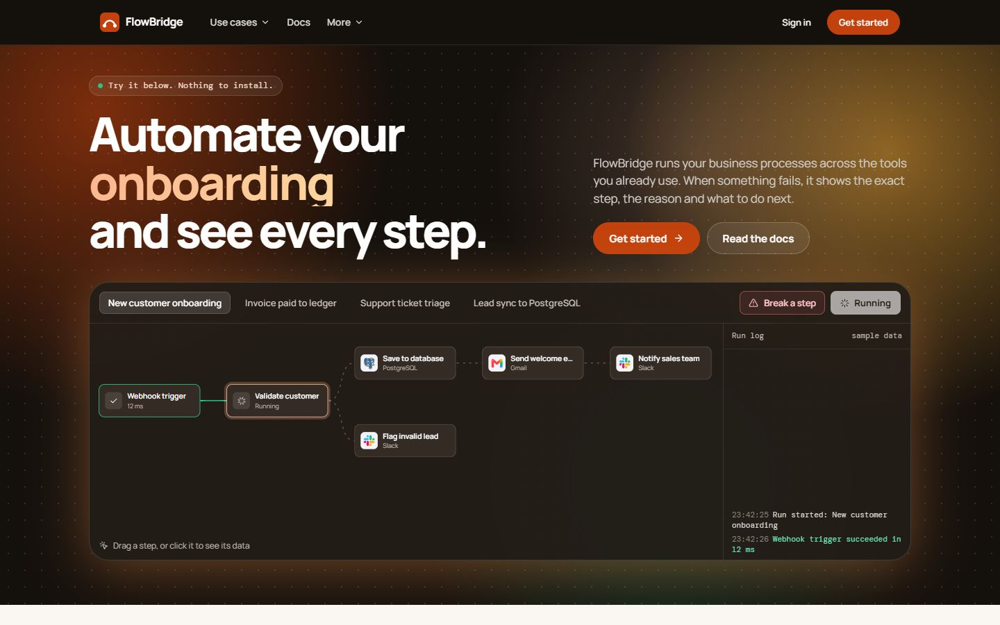
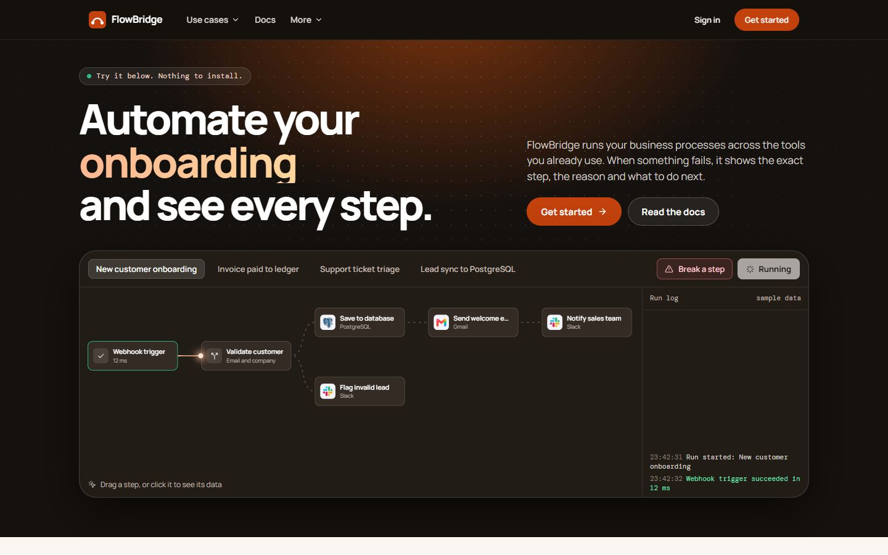
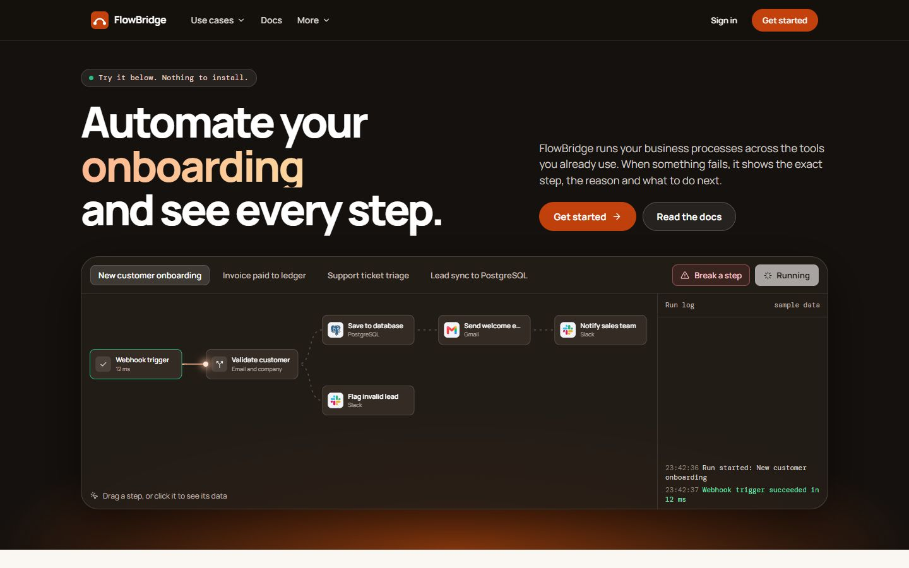
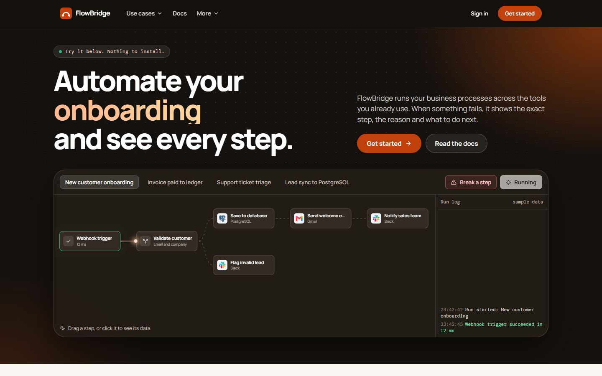
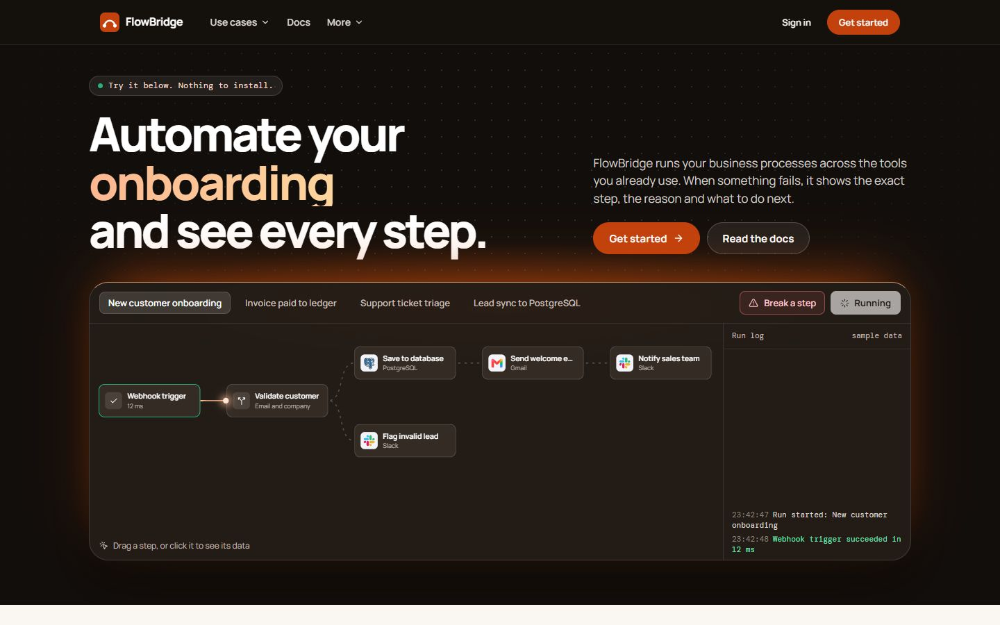
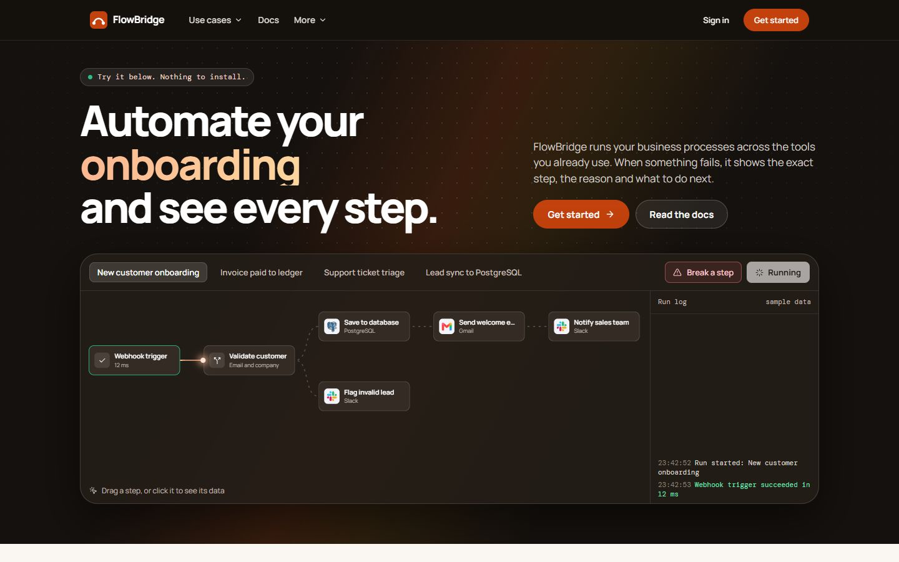
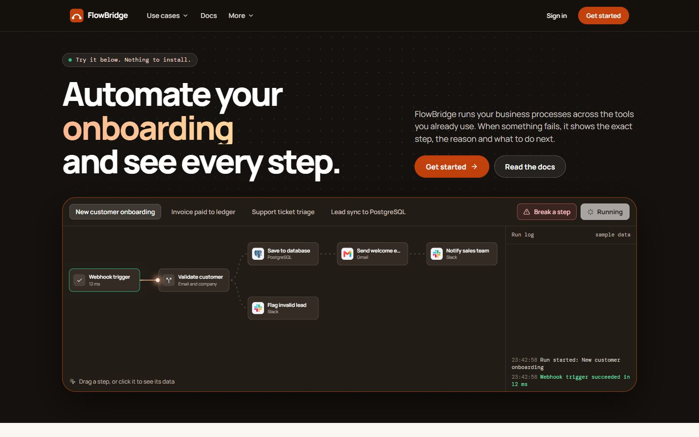
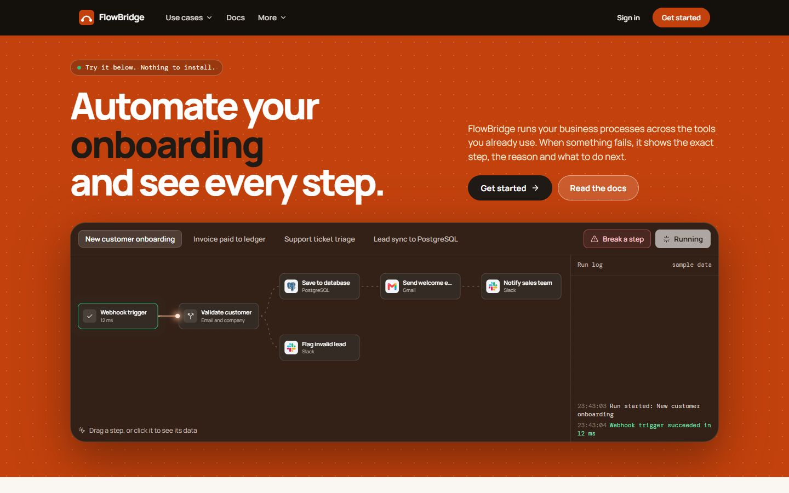

Eight ways to place orange in the first section of the home page. The rest of the page stays the same. Open a live page to see the movement and the hover effects.
Two large orange and amber glows on the left and right, plus an orange shadow around the demo.

One soft orange light from the top centre, behind the headline. Everything else is calm charcoal.

The top stays dark, and the orange rises from below like a horizon, lighting the demo from behind.

A single warm light in the top-right corner, near the buttons, with a faint echo at the bottom left.

A thin band of orange light along the top edge of the demo, like light coming over a horizon. Very focused.

A soft diagonal beam of orange crossing the section, from top right towards bottom left.

No glow at all. Orange appears only in the highlighted word, the main button and a fine orange outline on the demo.

The whole section is orange, with white text and a dark highlighted word. The boldest option, and very recognisable.
